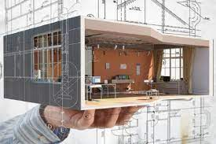

Arquitecta Florencia Ordoñez
«Siempre he afirmado que los lugares son más fuertes que las personas, el escenario más que el acontecimiento. Esa posibilidad de permanencia es lo único que hace el paisaje o a las cosas construidas superiores a las personas» Aldo Rossi
“Las muchas preguntas y muy complejas a las que nos enfrentamos hoy en día, como sostenibilidad, ecología o smart city, son una oportunidad para los arquitectos” Jean-Philippe Vassal
